Fortify
Board Game Arena 官方规则文档
Overview
In the heart of a breathtaking clash, the Red Army's treacherous ambush has shattered the tranquility of the once-pristine Green shore. Here, a symphony of steel Battleships, thunderous Tanks, and fearless Infantry troops has taken center stage on the precipice of a war that will redefine the meaning of battle. But in this game, annihilating enemy units alone will not secure victory. This is where the art of Fortification, the true game-changer, comes into play.
In the game of Fortify, your path to victory hinges on the formation of Fortified squares, each comprised of four units. Will you take the helm and lead the audacious Red Army to conquer the shore? Or will you stand as the unwavering guardian of the Green Army, fortifying your defenses to thwart the relentless enemy?
Objective
The Game of Fortify is played between 2 players, over 3 rounds or ‘Volleys’. In each Volley, players take turns to Enlist, Move, Fortify or Attack using their player pieces, or ‘units’ on a 4x5 Map grid of different terrain types: Land, Water and Shore. A Volley ends if any one player is able to achieve a pattern - a 4 square fortification with their units; that player wins that Volley. Then players play the next volley and so on. The game ends as soon as a single player wins 2 Volleys, and that player is the winner!
Components
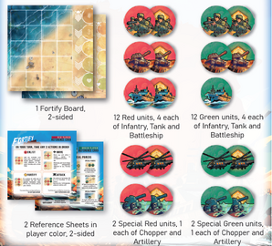
Components of the game include1 Fortify Board (2-sided), 12 Red units (4 each of Infantry, Tank and Battleship), 12 Green units (4 each of Infantry, Tank and Battleship), 2 Special Red units (1 each of Chopper and Artillery), 2 Special Green units (1 each of Chopper and Artillery).
Setup
1. Layout the 4x5 side of the Board in the center
2. Decide which player wants to go first. They become the Red player, and the other player becomes the Green player
3. Each player takes 12 units into their supply: 4 Infantry, 4 Tank and 4 Battleship units as well as a Reference Sheet, all of their
chosen player color, respectively. They place it near them outside the board
4. Players must ensure that all their 12 Player units must face the Normal side up at the beginning of the game. The game is now ready to begin!
Concepts
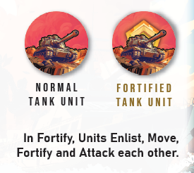
Two Sides of a Unit: Each player piece or unit has faces: the Normal side and the Fortified side. Every unit starts with the normal side up in the player supply, but can be flipped (fortified) on the board under special conditions. That unit gains the Fortified ability for the rest of the Volley.
Fortified Units: A fortified unit has all the powers as a normal unit of that type. Both are collectively known as ‘units’. e.g. A fortified
Tank and a normal Tank are collectively known as a ‘Tank’ for all purposes and have the same rules.
However, a Fortified unit has certain additional advantages. A Fortified unit by default gains the ability to attack by itself, i.e. they
may break formation and still be able to Attack. They are difficult to kill, as only enemy Fortified units can attack them. They are also
important to achieve the victory condition!
Adjacency: In Fortify, adjacent means orthogonally adjacent.
Friendly: Friendly unit is same as unit of your own player color. You always control units of your own color, except when attacking, you move an opponent unit to the Reinforcement Track Reinforcement Track: A unit after getting attacked, moves to the reinforcement track, where it may come back alive after a certain time.
Formation: A normal unit must maintain Formation if it wants to Attack OR if it wants to Fortify. If it breaks formation, it can only move around. The only units that don’t need formations are Chopper and Artillery, and these are discussed later
Gameplay
Basic Turn Structure
Each player takes a turn to carry out any 2 Actions in order. There are 4 available Actions to choose from. Once a player is done with their 2 Actions, the turn passes to the other player and they carry out their chosen 2 Actions respectively, and so on... with both players alternating turns to take 2 Actions, until one player achieves the victory condition by the end of their turn.
The First Turn
The Volley begins with the Red player’s invasion. In the first turn, they can take just 1 Action - they may Enlist or add a unit directly onto any Shore space.
The turn then passes to the Green player who can take 2 Actions. The first Action must be an Enlist action - they may add a unit directly onto any empty space (keeping in mind the unit terrain type restrictions). Thereafter, the second Action onwards the game continues with the standard rules for Actions.
Actions
In a player’s turn, they may choose any 2 Actions in any order as long as they can legally carry out the Action/s. They may also repeat the same Action. They may also take lesser or no Actions if they wish to.
The 4 available actions are: Enlist, Move, Fortify and Attack.
Enlist
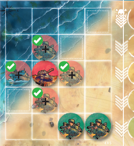
A player may take any one available unit of their color from their supply, and add it to an empty space on the board.
Except during the first turn of each player, the space where a new unit is added must be adjacent to an existing unit of their player color.
Note: Only Infantry and Tank units can enlist on Land spaces, while only Battleship units can enlist on Water spaces. All 3 unit types can enlist on Shore spaces.
Unit Power: Two Infantry units can be enlisted as a single Enlist action!
Move
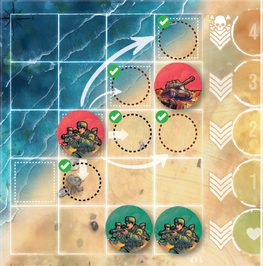
A player may move any one unit of their color on the map. The unit can either move to an empty space adjacent to where it is currently placed, OR it can directly jump to any empty space, adjacent to an existing unit of their color.
Note: Remember that Infantry and Tanks can only move to Land and Shore spaces, while Battleships can move to Water and Shore spaces respectively.
Unit Power: Tank has a special movement rule, that allows it to move to any empty land or water space on the map, in a single Action.
Fortify
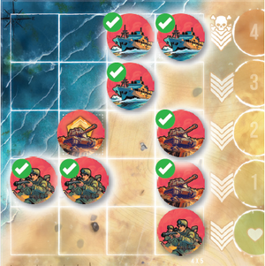
A player may Fortify any one normal (non-fortified) unit of their color on the board, as long as that unit is in ‘Formation’. The Formation rules vary as per unit type.
Formation Rules for Units: A pair of two Infantry units must be adjacent to each other, and one of them must be adjacent to a third friendly fortified unit
A pair of two Tank units must be adjacent to each other, and a third friendly unit must form a straight row or column along with the Tank unit pair.
Three Battleship units must be adjacent to each other either in a row, column or an L shape.
Unit Power: A single Battleship unit can also Fortify itself, if it is present on a Shore space.
Attack
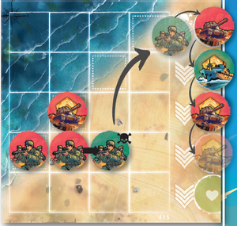
A player may use any one unit of their color on the board, to Attack any opponent unit, provided:
1. The attacking unit is either in Formation, OR is itself Fortified.
2. The enemy unit being attacked is orthogonally adjacent to the attacking unit
3. A fortified unit may only be attacked by an opponent fortified unit
The unit that got attacked, moves to the top-most slot of the reinforcement queue on the side of the board. If there are units already in the reinforcement queue, they all move one slot down to make space for the newly damaged unit.
Note: If any damaged unit moves out of the 1 slot into the bottom most heart slot of the Reinforcement track, then that unit is now healed and immediately goes back to the player’s supply, to be enlisted in a later action. If it was Fortified, it returns as a Fortified unit to the supply, and can be enlisted directly as a Fortified unit.
Volley End and Game End
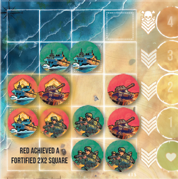
A Volley between two players continues, till either 1 of the conditions is achieved by the end of a player’s turn:
a. A player manages to achieve a Fortification of 2x2 spaces with any type of units, anywhere on the map, OR
b. In case nobody is able to achieve a Fortification of 2x2 spaces, the game ends when a player has fortified all of their 12 units, be it in their supply, on the board or on the reinforcement track.
The player who triggers the end game, wins the Volley! A new Volley begins, with the players changing their colors respectively.
The game goes on for 3 rounds or Volleys. The player who first wins 2 Volleys in total, wins the game of Fortify!
Unit Type Specialties and Formations
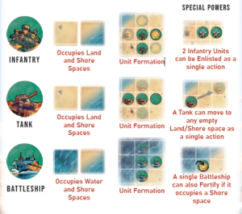
Special Unit and Game Variants
Once you are familiar with the base mechanics of the game, you can try some variants included with the game.
5x5 Map
Play the same game with same rules, but on a different map! The game board comes with 2 maps - the standard 4x5 spaces map and a bigger 5x5 spaces map on the flipside.
Special Warfare
Use the additional units: The Chopper and Artillery!
As part of Setup, once you decide your player colors, secretly choose any 10 units from the 14 options you have (4 Infantry, 4 Tanks, 4 Battleships, 1 Chopper, 1 Artillery). Once done, each player reveals their chosen 10 units simultaneously. The remaining 4 units are returned to box by each player respectively. Players will play all the volleys with these 10 units only! The 5x5 Map is recommended.
The game then is played like usual for 3 Volleys with same win conditions.
Special Unit Rules
Chopper
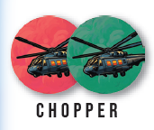
Enlist: The Chopper Unit can be enlisted on top of a friendly Battleship Unit only.
Move: The Chopper can move to occupy any space on the board - be it land, water, shore, or even spaces occupied by an existing unit, as one Action! In case a space is not empty, it simply stacks itself on top of the existing unit - be it friendly or opponent units. Any unit beneath a Chopper unit becomes temporarily non-functional till the chopper moves from that space (even from the perspective of winning the Volley)
Fortify: A Chopper can Fortify only if it occupies a space above a friendly Fortified Battleship on the board.
Attack: A Chopper can only attack an enemy unit that is directly beneath it, i.e. it an only attack a unit that it is occupying space on top of. Like always, only a Fortified chopper can attack opponent Fortified units.
Special Rule: Choppers are immune from each other - they cannot attack or be attacked by another chopper, nor can they move on top of each other. They can however be attacked by every other opponent unit following the basic rules of Attack.
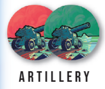
Artillery
Enlist: The Artillery is a Land space only Unit. It can be enlisted as per normal enlisting rules.
Move: The Artillery requires both the Actions to be spent to Move (only between Land spaces); rest as per normal movement rules
Fortify: The Artillery requires both the Actions to be spent to Fortify. An Artillery can just Fortify on its own, wherever it is.
Attack: An Artillery can attack any enemy unit that is present in any space that belongs to the same row or column, of that of the Artillery unit. It can attack a unit like this even if it is not adjacent to the Artillery, and even if there are other units present in between the Artillery and the attacking spot. Like always, only a Fortified Artillery can attack opponent Fortified units.
Special Rule: Artillery units can never be attacked by any unit - in a way, they are immortal. Once enlisted, they remain or move on the board for the entire volley.
Points System
With the base game or any of the variants, you can alternatively use a point system to play the game a bit differently. With the system in place, players can play a shorter 2 Volley game, or a slightly longer 4 Volley game. When the end game is triggered, both players calculate their total points scored for their own colored units, as per the following rules:
Points for every Fortified unit you have (Supply, Board and Reinforcement Track )
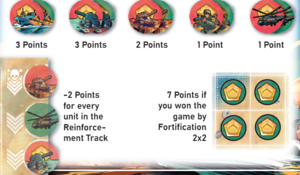
Keep adding player scores cumulatively after every Volley, and keep a tally. The player with the lower total score decides player color for next Volley.
At the end of 2 (or 4) Volleys, the player with the most total score, wins the game! If tied, tied players share the victory.